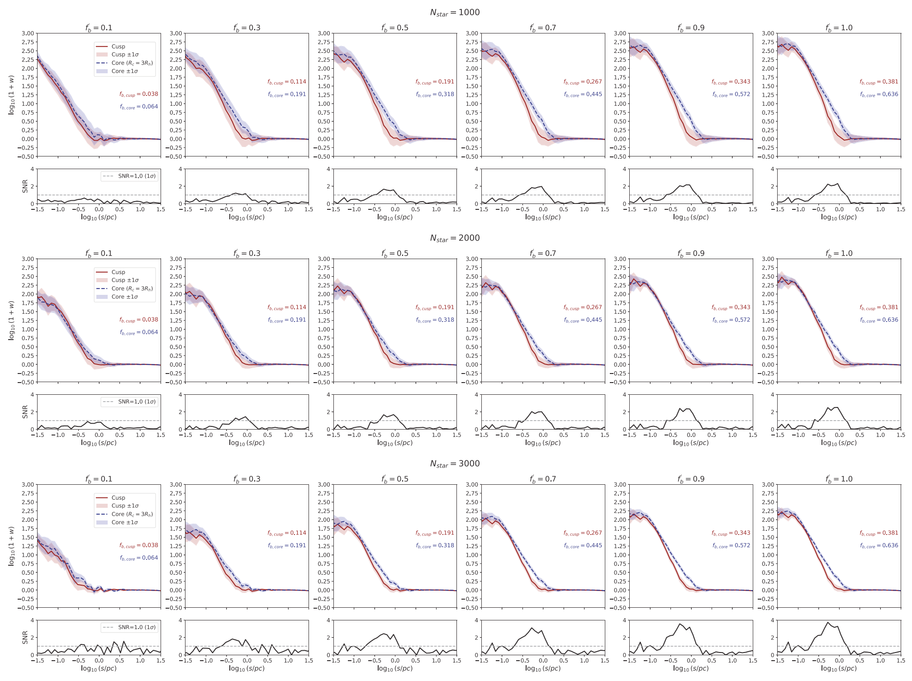
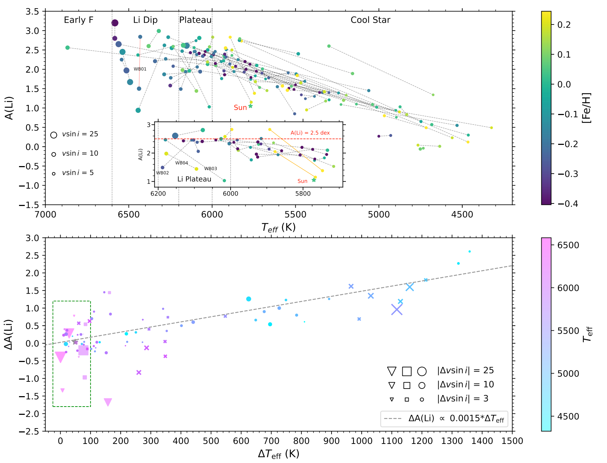
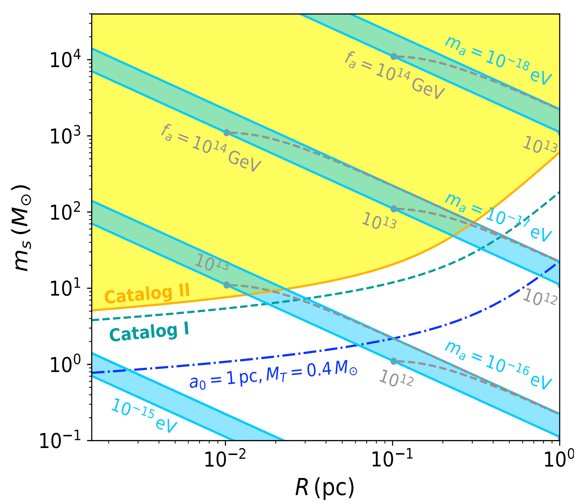
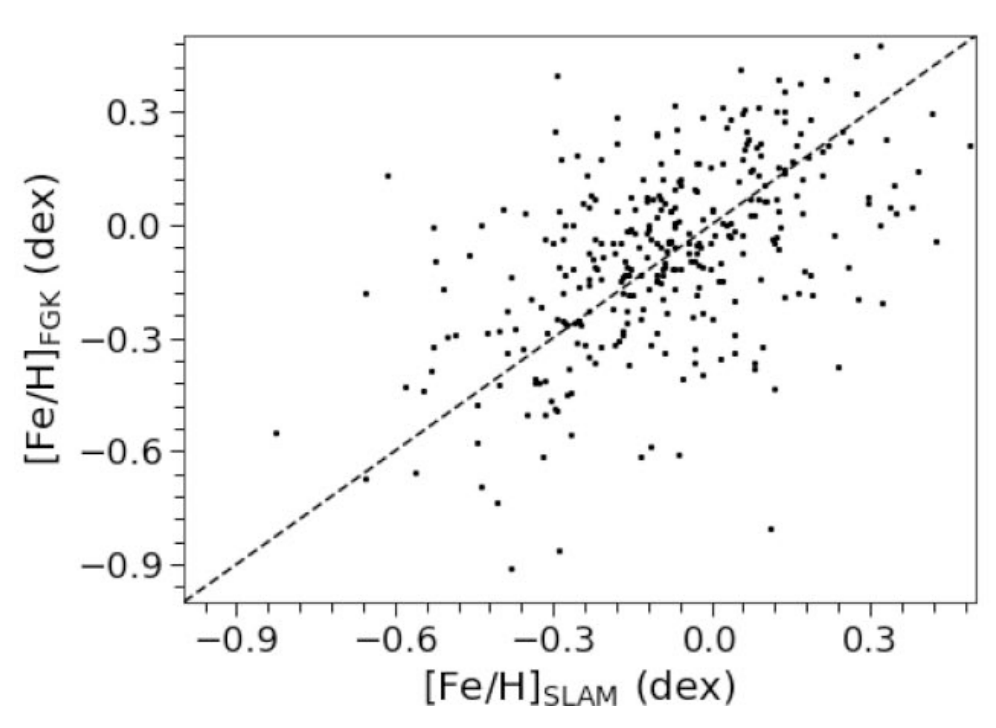
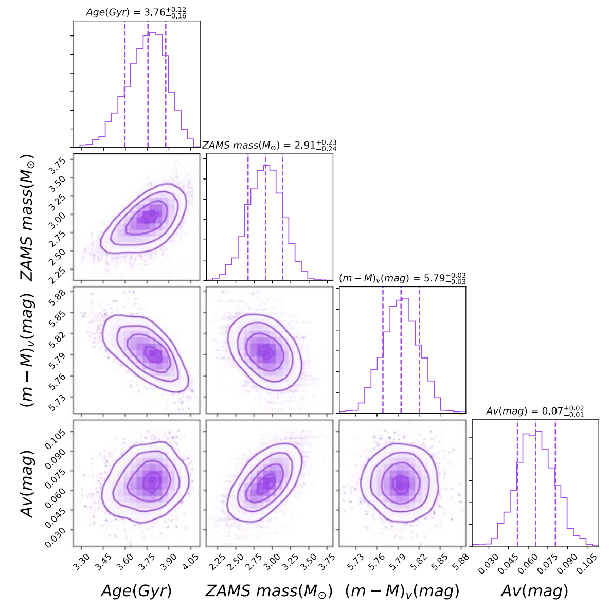
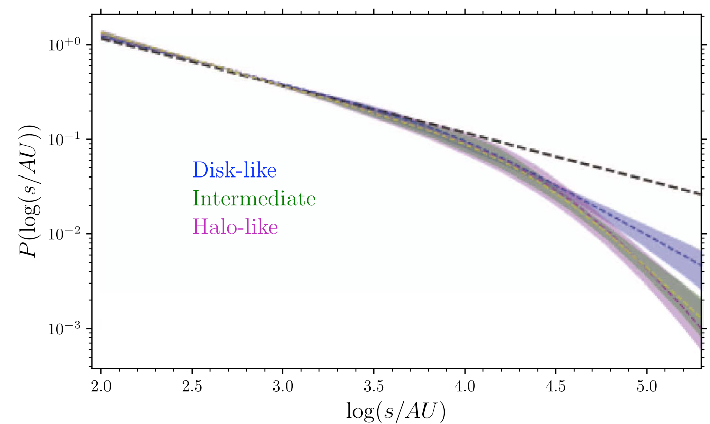
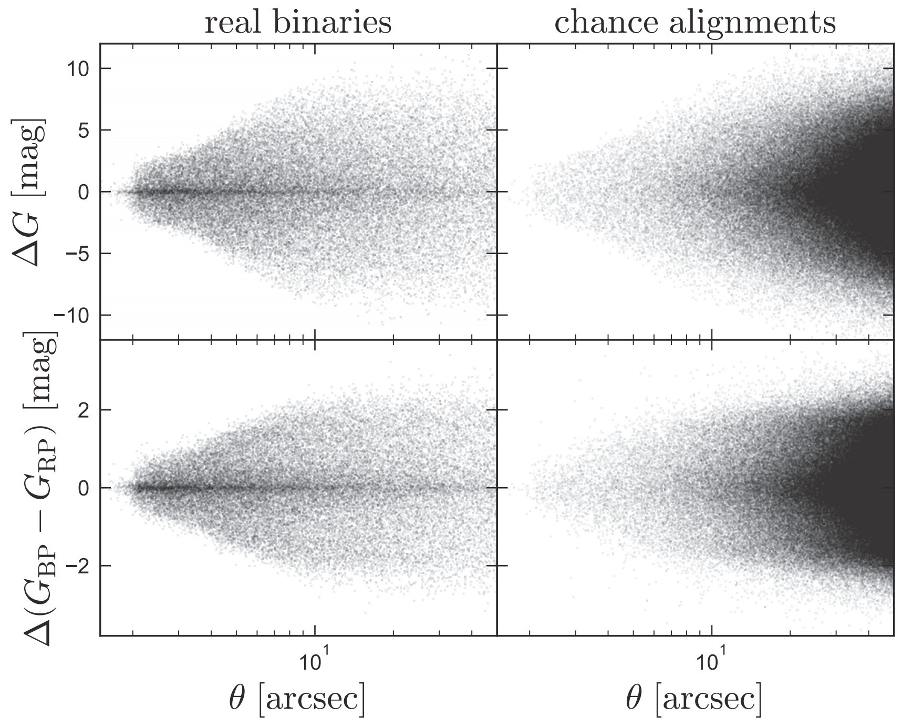

The Wide Binary Series
Probing Stellar Populations, Dynamics, and Galactic Structure through Wide Binaries
The Wide Binary series investigates gravitationally bound stellar pairs with separations from ~100 au to 1 pc,
using Gaia DR2/EDR3 and follow-up spectroscopy. Wide binaries are powerful probes of stellar formation, Galactic dynamics,
and dark matter on small scales. Our work spans twin binary excess, separation distributions across Galactic populations,
white dwarf chronometry, metallicity calibration of M dwarfs, lithium depletion,
dark matter soliton evaporation, and constraints on dark matter profiles in ultra-faint dwarf galaxies —
all leveraging the unique advantages of wide binaries.
Paper VII

2026 MNRAS (submitted)
We assess the capability of the Chinese Space Station Telescope (CSST) to detect wide binaries in the ultra-faint dwarf Segue I,
and to distinguish between cusped and cored dark matter haloes using the two-point correlation function of stellar pairs.
CSST can robustly detect wide binaries at the 3σ level for binary fractions ≥1% with ~2300 stars, but distinguishing profiles
requires ~6000 stars and binary fraction ≥10% within ~40 kpc.
View on arXiv
Paper VI

2026 ApJ, 1004, 113
Using 116 wide binary systems as coeval, chemically homogeneous pairs, we isolate the factors governing lithium depletion.
Effective temperature (Teff) is the dominant parameter, recovering the Li dip, plateau, and a linear trend for cool stars.
Projected rotational velocity (v sin i) is not an independent driver. We identify one anomalous system with a ~1.4 dex Li excess,
possibly due to planetesimal accretion or binary interaction with a tertiary companion.
View on IOPscience
Paper V

2025 JCAP, 02, 001
We calculate the tidal evaporation rate of wide binaries under gravitational perturbations from randomly distributed,
spatially extended dark solitons. Using high-probability halo-like binary candidates from Gaia EDR3 with separations
>0.1 pc, we derive constraints on axion-like particle solitons. Survival of these binaries rules out soliton masses
above a few solar masses for sizes ~0.01–0.1 pc, probing boson masses around 10−17–10−15 eV.
View on IOPscience
Paper IV

2024 MNRAS, 527, 11866
Using 1308 FGK+M wide binaries observed by LAMOST, we calibrate M dwarf [Fe/H] via the data-driven SLAM model.
The training labels come from the FGK companions, covering [Fe/H] from −1 to +0.5 dex and Teff from 3100 to 4400 K.
The model yields uncertainties of ~0.15 dex in [Fe/H] and ~40 K in Teff at SNR~100. We apply it to ~63,000 M dwarfs,
and compare with other calibrations, finding good consistency with Birky et al. (2020) and a systematic offset relative to APOGEE.
View on MNRAS
Paper III

2021 ApJS, 253, 58
We analyze 4050 wide binaries containing a white dwarf (WD) and a main-sequence (MS) star. Using BASE-9 modelling,
we determine ages for 3551 WDs with median precision στ/τ ~20%. Ages are validated against known clusters
and WD-WD binaries. This provides precise ages for low-mass MS companions, otherwise inaccessible.
The catalog includes ages, ZAMS masses, extinctions, and distance moduli.
View on IOPscience
Paper II

2020 ApJS, 246, 4
We construct a pure sample of ultrawide binaries (0.01–1 pc) from Gaia DR2, divided into disk-like, intermediate,
and halo-like populations by tangential velocity. The separation distribution follows a power law p(s) ∝ s−1.54 for s < 104 au,
but steepens at larger separations. The steepening is stronger for halo binaries than disk binaries, providing constraints
on formation scenarios and possible MACHO disruption.
View on IOPscience
Paper I

2019 MNRAS, 489, 5822
Using 42,000 wide binaries from Gaia DR2, we measure the mass ratio distribution p(q) for primary masses 0.1–2.5 M⊙
and separations 50–50,000 au. We discover a sharp excess of equal-mass “twin” binaries (q ≳ 0.95) persisting out to
1000–10,000 au. The twin excess decreases with separation but its width (q ≳ 0.95) is constant over 0.01–10,000 au.
We argue that wide twins likely formed at closer separations and were subsequently widened by dynamical interactions.
View on MNRAS
Related Publications
- El-Badry, K., Rix, H.-W., Tian, H.-J., Duchêne, G., Moe, M. (2019). Twinning: equal-mass binaries at wide separations. MNRAS, 489, 5822 [MNRAS]
- Tian, H.-J.*, El-Badry, K., Rix, H.-W., Gould, A. (2020). The Separation Distribution of Ultrawide Binaries across Galactic Populations. ApJS, 246, 4 [IOPscience]
- Qiu, D., Tian, H.-J.*, Wang, X.-D., Nie, J.-L., von Hippel, T., Liu, G.-C., Fouesneau, M., Rix, H.-W. (2021). Precise Ages of Field Stars from White Dwarf Companions in Gaia DR2. ApJS, 253, 58 [IOPscience]
- Qiu, D., Li, J., Zhang, B., Liu, C., Tian, H.-J., Niu, Z. (2024). Calibration of metallicity of LAMOST M dwarf stars using FGK+M wide binaries. MNRAS, 527, 11866 [MNRAS]
- Qiu, D., Gao, Y., Tian, H.-J.*, Wang, K., Wu, Y., et al. (2025). Wide binary evaporation by dark solitons: implications from the GAIA catalog. JCAP, 02, 001 [IOPscience]
- Xie, C.-C., Tian, H.-J.*, Shi, J.-R., Zhou, Z.-M. (2026). Lithium in Wide Binaries: Effective Temperature Governors Depletion while Rotation Plays a Minor Role. ApJ, 1004, 113 [IOPscience]
- Tao, Y., Tian, H.-J.*, Yue, B., Peñarrubia, J. (2026). Constraining dark matter density profiles in UFDs with wide binaries: forecast for the Chinese Space Station Survey Telescope. MNRAS (submitted) [arXiv]